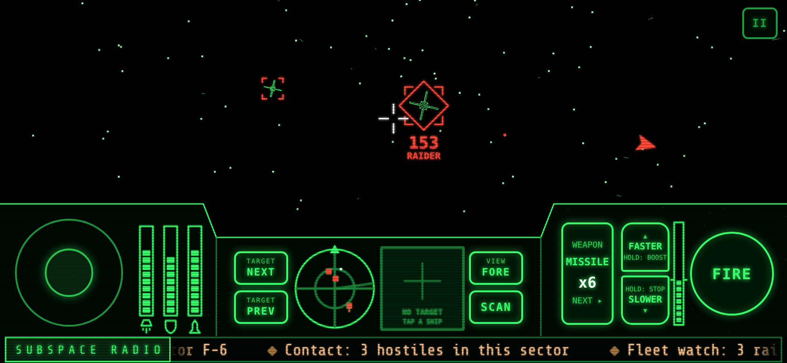
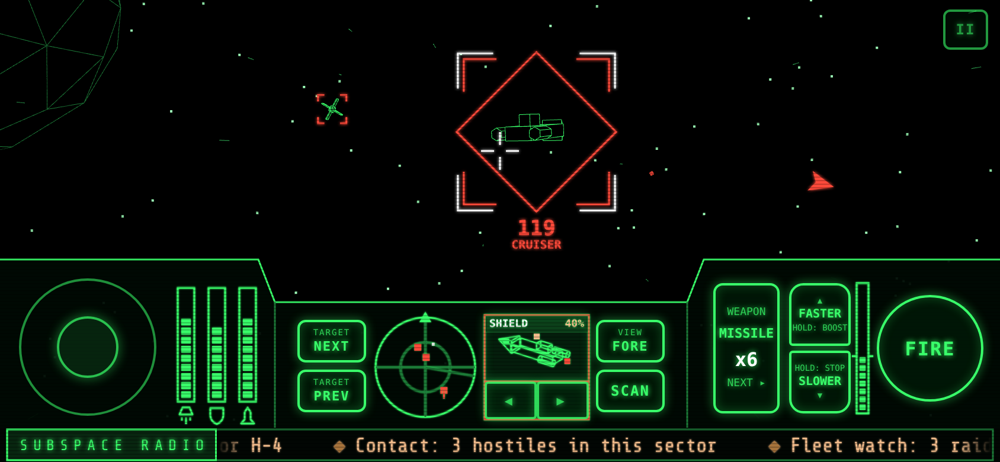
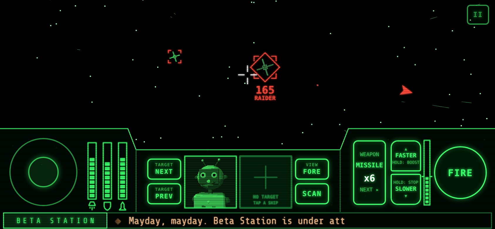
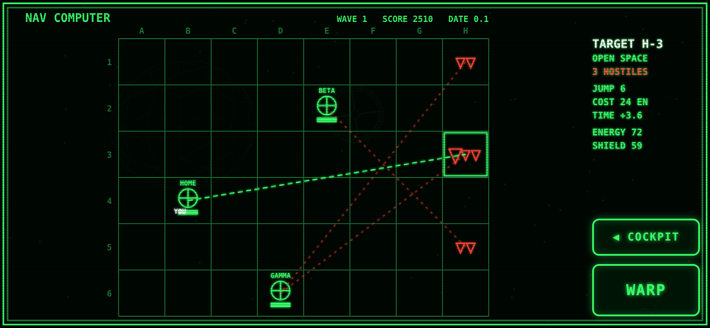

What the game must do, written from the build as it stands at commit 319ff56. Each requirement has an ID so it can be referred to and changed on its own. The cockpit section keeps the annotated screenshots as the interface specification.
Numbers are the current tuning values and are expected to move. Rules stated without a number are intended to hold.
What the game is and how a session runs.
Starguard is a first-person space shooter in an 80s vector-arcade style. The player flies one ship from a cockpit, fights raider fleets in space, and uses a sector map to decide where to fight.
A session is a single run. It ends when HOME CONTROL is destroyed or the player's ship is destroyed. There is no win state; the aim is score and waves survived.
Raider fleets arrive in numbered waves. A wave ends when every fleet on the map is destroyed. The next wave starts 8 seconds later.
Wave n has 2 + n fleets, to a maximum of 7. Fleets hold 2 to 4 ships (raiders, saucers, at most one cruiser) and gain one extra raider every two waves after wave 5, up to 6 ships.
No fleet may start a wave within two sectors of HOME. Fleets start at least three sectors from every station and from the player, or two sectors if on the map edge.
Score: 100 per raider, 150 per saucer, 500 per cruiser, 300 for finishing a fleet. Clearing a wave pays (1000 + 500 for each outpost still standing) × wave number.
This is a prototype for finding the fun. Tuning values in this document are the current settings and are expected to change; they all live in one tuning block in the game file.
What it must run on and what it may be built from.
The game is one HTML page using vanilla JavaScript and three.js, served by a small Python Flask app. No Node.js and no build step.
The primary target is an iPhone-size screen in landscape. It must also run in a desktop browser. Layouts must hold from about 640 px wide upward; narrower screens are not supported.
All controls are touch controls sized for thumbs. Every control also has a keyboard equivalent for desktop testing.
The layout must respect the device safe areas (notch and home indicator), and the drawn dashboard and the touch controls must take those insets from a single reading so they cannot drift apart.
Nothing essential may fall off a short screen. With the browser's bars showing, a phone in landscape can be as little as 300 px high: the title screen keeps LAUNCH directly under the title, overlays anchor to the top when they do not fit, and the nav computer's side panel tightens its text so it always ends above the COCKPIT button.
The page must not zoom or scroll in response to double taps, pinches or drags on iOS and iPadOS.
Turning the phone to portrait shows a rotate-device notice and pauses the game, including when the turn happens mid-warp. Leaving the browser tab also pauses.
The look is green vector lines on black: wireframe models with hidden lines removed, a canopy gunsight, and scanlines. Red is reserved for hostiles and danger.
The interface is fully diegetic. Every readout and control is part of the cockpit dashboard. The only exceptions are the pause button in the top-right corner and the gunsight markings projected on the glass.
All sound is synthesised in the browser. The game ships no audio or image assets. three.js and the tape typeface load from public CDNs, so the device needs internet access.
How the ship moves and how the player drives it.
The left thumb steers with a stick that sits in a housing on the left console. A touch anywhere on the left 46% of the screen drives the stick, so the thumb need not land on it.
Stick up pitches the nose up and stick right yaws right, at up to 1.55 rad/s with a 10% dead zone. An INVERT Y setting reverses pitch.
The throttle is a two-part rocker. A tap on FASTER or SLOWER changes the speed setting by 10, between 0 and 50. The setting starts at 40 and holds until changed.
Holding FASTER boosts to speed 95 for as long as it is held, at 2.5 energy per second, then returns to the setting. Holding SLOWER for 0.35 s is a full stop.
SLOWER is disabled while the speed setting is zero. While docked, FASTER reads LAUNCH.
A speed tape beside the rocker shows current speed from stopped (empty) to boost (full), with ticks at the throttle setting and white segments above it.
A VIEW button switches between fore and aft view. The ship keeps flying forward. In aft view the stick still moves the view the way it is pushed.
Weapons fire in the direction of the current view. Warping returns the view to fore.
With the engine system damaged, all speeds drop to 55%.
What the player fires and what it costs.
A WEAPON button cycles laser, missile, torpedo and shows the selected weapon and rounds left. FIRE fires the selected weapon while held.
Laser: about 7.7 shots per second, 1 damage, range about 680. It draws on a capacitor: 3 per shot, recharging 9 per second from the energy tank at 0.04 energy per point.
Lasers aim themselves at a hostile within about 7° of the gunsight and 650 units, leading the target. This lock is automatic and separate from the chosen target (TGT).
Missile: 8 rounds, one every 0.5 s, 6 damage. It homes on the chosen target if there is one, otherwise on the locked hostile, otherwise on whatever is most nearly ahead of it.
Torpedo: 3 rounds, one every 1.3 s. It fires only in aft view, is unguided, and bursts near a target or when it burns out. The burst does 20 damage in the inner half of a 48-unit radius and 10 outside it, and clears enemy shots.
Trying to fire a torpedo in fore view, or any weapon with no rounds or no charge, is refused with a message saying why.
A status bar on the left console shows the selected weapon's readiness: capacitor charge for the laser, rounds left for missiles and torpedoes. Its icon changes with the weapon.
Lasers can shoot down enemy shots. Doing so scores nothing.
Choosing a target by touch and aiming at parts of it.
Tapping a ship or the station on the glass makes it the chosen target. Tapping it again, or tapping the target scope, releases it. The target is also released when it is destroyed or the sector is left.
A tap on a target takes priority over the stick when it lands in the stick's touch area.
TARGET NEXT and TARGET PREV buttons, left of the radar and matching VIEW and SCAN on the right, step through the hostiles in the sector and then the station, wrapping round. With nothing chosen they start from the nearest hostile. They are dimmed when there is nothing to target.
The chosen target wears a second, white bracket and always shows its range and name. If it is off the glass its arrow turns white.
The target scope sits beside the radar. It shows a rotating wireframe of the chosen ship or station, or NO TARGET when nothing is chosen. Choosing a target does not hide the radar.
Every enemy ship has three subsystems: WEAPON, SHIELD and ENGINE. The scope marks each on the wireframe, coloured by condition: green intact, amber damaged, red destroyed.
Previous and next buttons along the bottom of the scope, each half its width, step through HULL, WEAPON, SHIELD and ENGINE. A line at the top of the scope names the selected item and shows its condition as a percentage, or OUT.
Every hit on an enemy ship damages its hull and one subsystem. With a subsystem selected on the chosen target, the hit goes to that subsystem 80% of the time; otherwise the subsystem is random.
A destroyed WEAPON stops the ship firing. A destroyed ENGINE leaves it 25% of its speed and turn rate. A working SHIELD absorbs half of all hull damage.
Subsystems take 1 hit on a raider, 2 on a saucer and 5 on a cruiser.
The station can be targeted to see its wireframe and hull percentage. It has no subsystems to select and cannot be damaged by the player.
What the player fights.
Raider: hull 1, speed 52, fires forward. Saucer: hull 3, speed 40, wider firing arc. Cruiser: hull 14, speed 22, fires in any direction.
Enemy ships fly at the player, break off inside a set distance (60, 80 or 110 units by class), loop away for a few seconds and return.
Enemies open fire inside 500 units. Shots travel at 130, lead the player's movement with some error, and last 6 seconds.
An enemy shot costs 13 shield. A collision costs 25 and does 3 damage to the enemy, once per pass.
When the last hostile in a sector is destroyed, shots still in flight are removed.
Enemies do not attack stations in space. A fleet's effect on a station is strategic (STR).
Energy, shields and what happens when they run out.
The ship has an energy tank of 100 that only docking refills. Boost, shield recharge, laser recharge and warping all draw on it.
Shields hold 100 and absorb hits. They recharge 2.5 per second at 0.6 energy per second, but only after 4 seconds without being hit.
A hit larger than twice the remaining shield carries through to the hull as well as dropping the shields.
A hit with shields down knocks out one of three systems at random: radar, comms or engine. A hit with all three already out destroys the ship.
Radar out: the radar scope shows static. Comms out: no hails, no fleet or station news on the radio, no fleets or station status on the chart, no alarms for distant events. Engine out: 55% speed and double warp cost.
With energy at zero there is no boost, no shield recharge and no laser recharge.
Three status bars on the left console show energy, shields and the selected weapon, each with an icon. A bar flashes red below 25%.
The strategic layer behind the dogfights.
Space is an 8 by 6 grid of sectors, lettered A to H and numbered 1 to 6. The player is always in exactly one sector.
There are three stations: HOME CONTROL at B-4, BETA STATION at E-2 and GAMMA STATION at D-6. Each has 100 hull.
Each fleet heads for one live station, moving one sector at a time (diagonals allowed). The interval is 20 s in wave 1 and shortens by 2 s per wave to a minimum of 9 s.
Only one fleet may occupy a sector. A fleet blocked by another fleet already on its target, or stuck for three moves, picks a different live station.
A fleet on a station's sector drains it by 0.6 hull per second for each ship in the fleet.
A fleet in the player's sector does not move. Its ships are in space with the player, and the fleet on the chart loses a ship each time one is destroyed.
The chart and the sector must always agree: a fleet charted in the player's sector has its ships in space, and ships in space belong to a fleet charted in that sector.
When a station is destroyed its fleets retarget. If HOME CONTROL is destroyed the game ends.
Clearing a wave repairs every surviving station by 25 hull, plus 5 for each wave after the first, to a maximum of 60.
Opening the nav computer does not stop anything. Fleets keep moving, and the dogfight in the player's sector continues: the ship holds its heading and speed, cannot be steered, boosted or fired, and can be hit and destroyed. Only pause stops the game.
The sector chart and travelling by it.
SCAN, below VIEW in the centre console's button column, opens the nav computer: the sector grid, stations with hull bars, fleets drawn one wedge per ship (a larger wedge for a cruiser), each fleet's heading line, and the player's sector.
Tapping a sector selects it. A side panel shows what is there, the jump distance, the energy cost and the time the jump adds. It flashes UNDER ATTACK while hostiles are in the player's sector.
WARP jumps to the selected sector. It costs 4 energy per sector of distance, doubled with the engine damaged.
A jump also costs time: every fleet gains 6 seconds of movement per sector jumped, and a station under attack takes half-rate damage for that time, though never below 15 hull.
The player arrives at the sector origin facing the station if there is one. Hostiles in the sector are placed 300 to 460 units ahead.
Nothing may enter or leave the destination sector, and no station takes damage, between the jump and the player regaining control.
If the player cannot afford a jump, an emergency jump to a station's sector is still allowed. It empties the tank, drops the shields, burns out one working system, doubles the time cost, and says which system was lost on arrival.
SCAN flashes while any fleet is on a station, unless comms are out.
Refuelling, repair and rearming.
Flying within 42 units of a station docks the ship, provided no hostiles are in the sector.
While docked the ship is stationary and gains 30 energy, 45 shield and 60 laser charge per second.
After 1.3 seconds docked, all damaged systems are repaired and missiles and torpedoes are restocked.
LAUNCH flashes and becomes usable only once that repair and rearm has happened. Launching sets the throttle to 40 and prevents re-docking for 5 seconds.
If hostiles arrive while the ship is docked, it is launched at once with a warning. With hostiles present, an approach to the station is refused with a message.
Stations and the enemy talking to the player.
Stations and the raider leader can hail the player. The channel is one-way.
While someone is speaking, their talking head takes over the radar display and the subspace radio strip becomes their channel: their name in the label box and their words typed on the tape. The target scope beside it stays in view.
Heads are low-polygon signed-distance models drawn by a shader: faceted, posterised, scan-lined, green for stations and red for the raider leader. Mouths move with speech and eyes blink. The three station heads are friendly robots, each a different shape; the raider leader is an alien.
Home Control speaks at mission start, each new wave, wave cleared, low energy and a station lost. Outposts send a mayday when a fleet reaches them, a warning below 35% hull, thanks for a destroyed fleet and a greeting on docking. The raider leader taunts on contact, on losing a ship and when the player's shields fail.
What a speaker says is decided at the moment they start speaking, so counts and status are never out of date. A line that is no longer true is dropped.
A caller waits for an alert to clear, for at most 4 seconds, and the radar stays up while they wait. Red and white alerts may talk over a caller; routine prompts may not.
Urgent calls jump the queue. Enemy chatter is dropped if the channel is busy. A newer line on the same subject replaces an older one.
The channel runs only while the player is in the cockpit. With comms out there are no hails at all.
When nobody is speaking, the strip scrolls routine traffic: the player's sector, hostiles present, fleets at large, each station's condition and any damaged system.
Sound.
Effects are synthesised: lasers, missiles, torpedoes, enemy fire, hits, explosions, warp, alarms, docking, refusals, the hail chirp and per-syllable speech blips pitched per speaker.
An engine hum follows the ship's speed.
Sound can be turned off in the pause menu. Audio must start on the first touch on iOS.
What the Flask app does.
The server serves the game page uncached and nothing else from the project folder.
GET /api/scores returns the top 10 scores. POST /api/scores adds one and returns the new top 10.
A score entry is up to three letters or digits (default ACE), a score from 0 to 10,000,000 and a wave from 0 to 999. Anything else is rejected with a 400. The server keeps the top 50 in a JSON file.
The game-over screen shows the final score and wave, the score table, and a field to save initials. It confirms a save, reports a failed one, and cannot be dismissed in its first 1.2 seconds.
The server address and port come from the HOST and PORT environment variables when run directly.
The game is deployed at https://dev.retroverse.ai/starguard/ as a systemd service running gunicorn with one worker on port 5079, behind nginx, with the score endpoint rate-limited. The page uses only relative URLs so it works under a path prefix.
The four screens below are the interface specification. Every numbered element is required. Each note says what the element does; the tag says whether it is wired to game state.

Tap a number to jump to its note. Staged shot: two raiders and a saucer, one raider locked, missiles selected.

Staged shot: a cruiser chosen by tapping it, SHIELD selected and at 40%, engine destroyed.

Staged shot: Beta Station calling a mayday. The head has taken over the radar; the target scope beside it reads NO TARGET.

Opened with SCAN. Nothing stops while it is open: fleets keep moving and the dogfight in your sector goes on without you at the controls.
Current settings, all in the tuning block at the top of the game script.
| Speeds | cruise 40 · boost 95 · throttle step 10, max 50 · turn 1.55 rad/s |
|---|---|
| Laser | 0.13 s between shots · speed 650 · 3 charge per shot · recharge 9/s at 0.04 energy per point |
| Missile | 8 rounds · 0.5 s · speed 190 · 6 damage |
| Torpedo | 3 rounds · 1.3 s · speed 130 · blast 48 · 20 / 10 damage |
| Aim and targeting | auto-aim cone 0.12 rad, range 650 · selected subsystem takes 80% of hits · enemy shield soaks 50% · engine out leaves 25% |
| Enemy fire | opens at 500 · shot speed 130 · 13 shield per hit · ram 25 |
| Shields and energy | regen 2.5/s at 0.6 energy/s after a 4 s pause · boost 2.5 energy/s |
| Warp and docking | 4 energy per sector · 6 s of fleet time per sector · 1.3 s to repair and rearm |
| Fleets and stations | move every 20 s, minus 2 s per wave, minimum 9 s · drain 0.6 hull/s per ship |
| Enemy hull / subsystem hits | raider 1 / 1 · saucer 3 / 2 · cruiser 14 / 5 |
WASD or arrows steer · Space fire · Shift boost · = and - throttle · X full stop · Q weapon · V view · T and Shift+T next and previous target · [ and ] subsystem · M nav computer · Enter warp or start · P or Esc pause
Known gaps and decisions not yet made. None of these is a requirement.
Escape by warp. The fight now continues behind the nav computer, so reading the chart under fire is a risk. But WARP is still instant once tapped, and the ship cannot be steered from the chart. Whether a warp should take time to charge, or be refused under fire, is undecided.
Camping at HOME. Only one fleet can sit on a station at a time, so defending HOME alone and never warping survives several waves. The outpost bonus rewards using the map but does not force it.
Laser dominance. The auto-aimed laser is the right answer in most situations. Missiles and torpedoes are situational, and torpedoes need aft view.
Radar availability. The radar is hidden while anyone is speaking. Whether that cost is acceptable needs play.
Centre console crowding. The centre console holds two button columns and two displays. On a notched phone the four buttons are 47 by 36, the radar and target scope are about 62 px square, and the subsystem arrows are about 31 by 24.
Live deployment. The public site serves the working folder directly, so unfinished edits are visible as they are made. There is no separate release step.
Device testing. Everything has been tested in a headless desktop browser at phone size. Touch feel, frame rate, audio start and the zoom lock on real iPhone and iPad hardware are unconfirmed.
Score trust. Scores are submitted by the browser and are not verified. Fine on a private network, not beyond.